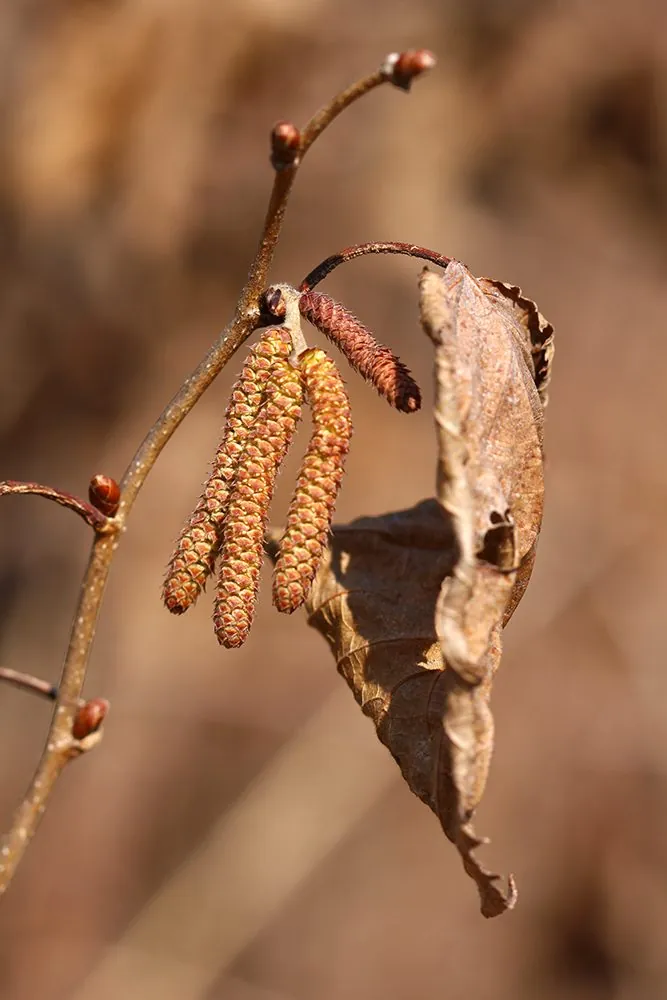

乔木 · 植物界
榛 Corylus heterophylla

桦木科落叶灌木或小乔木，坚果即榛子，壳薄仁香、富含油脂，可炒食，是中国北方重要的野生干果资源。
- 分类
- 门被子植物门纲木兰纲目壳斗目科桦木科属榛属
- 栖息环境
- 海拔 1500 米以下的山坡、林缘与灌丛，喜光耐寒耐旱
- 地理分布
- 中国东北、华北、内蒙古；朝鲜半岛、日本、俄罗斯远东地区
- 保护级别
- 暂无评估；中国未列入国家重点保护野生植物名录
物种志
榛为桦木科榛属落叶灌木或小乔木，高 1–7 米，树皮灰褐色，小枝被短柔毛与腺毛。叶片互生，宽倒卵形至圆形，边缘具重锯齿，先端平截或浅裂，叶脉明显。花单性，雌雄同株，雄花序为下垂的葇荑花序，冬季已裸露越冬，春季先于叶开放；坚果球形，外包钟状的总苞，成熟时总苞开裂，露出褐色坚硬的榛子，果期 9 月。
榛原产中国东北、华北、内蒙古及朝鲜半岛、日本、俄罗斯远东地区，多生于山坡、林缘与灌丛中，是中国北方分布最广的野生榛子。它喜光、耐寒、耐旱，对土壤适应性强，常成片生长形成榛灌丛。榛仁富含脂肪、蛋白质与维生素E，可生食、炒食、制糕点与榨油；榛子油可食用并可制化妆品；树皮与叶可提取栲胶，枝条可编筐。中国栽培的欧榛多从土耳其、意大利引进，平榛常作其抗寒砧木。
形态与习性
- 株高1–7 m，灌木或小乔木
- 花期3–4 月，先花后叶
- 果期9 月，坚果外包钟状总苞
- 光照喜光，不耐密林庇荫
- 水分耐旱，忌积水
- 土壤适应性强，以疏松壤土为好
- 主要用途榛子食用与榨油，枝条编筐，树皮提栲胶
趣味知识
- 榛子的雄花序在冬季就已裸露越冬，早春先于叶片开放。
- 榛子与核桃、腰果、杏仁并称世界四大坚果。
- 中国北方的平榛常被用作欧洲榛的抗寒砧木。
- 榛仁含油率可达 60%，榨出的榛子油可食用也可用于化妆品。